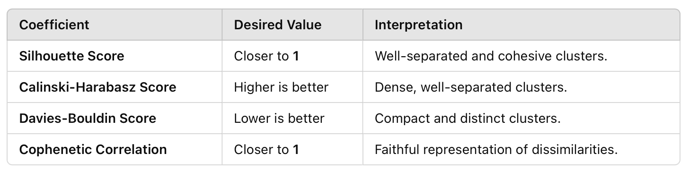

Examples
Before following the steps presented in this section, make sure to install the
clusttraj package as presented in Installing ClustTraj.
Clustering of water molecules
Here we perform the clustering of water molecules from a molecular dynamics simulation.
The h2o_traj.xyz file has the configurations of 5 water molecules:
$ head h2o_traj.xyz
15
Frame 1
O 5.79224 23.34640 11.44660
H 4.98409 23.01319 11.83659
H 5.84046 22.91839 10.59179
O 5.59517 22.31815 8.86907
H 5.09795 21.51188 8.73143
H 6.50540 22.06908 8.70880
O 2.78349 22.26232 10.73374
H 2.46676 23.16482 10.69619
To perform the clustering procedure we need to provide the file with configurations and the Root Mean Square Deviation (RMSD) threshold distance. This cutoff distance establishes the maximum accepted distance between clusters and can be determined in two ways.
Manual threshold
We can fix the maximum RMSD deviation between units in the same cluster up to a certain number, e.g., 2.0 Angstrons:
$ python -m clusttraj h2o_traj.xyz -rmsd 2.0
As a result, we obtained 4 output files, i.e., distmat.npy, clusters.dat, clusters.out and clusttraj.log.
distmat.npyfile has the condensed RMSD matrix in thenumpyfile format.clusters.datfile has the labels of each configuration in the configurations file.
$ head clusters.dat
3
3
1
2
1
1
2
1
1
3
clusters.outfile has the simulation details and the cluster sizes.
$ cat clusters.out
Full command: /Users/rafael/Documents/Física/projetos/clusttraj/clusttraj/__main__.py h2o_traj.xyz -rmsd 2.0
Clusterized from trajectory file: h2o_traj.xyz
Method: average
RMSD criterion: 2.0
Ignoring hydrogens?: False
RMSD matrix was written in: distmat.npy
The classification of each configuration was written in: clusters.dat
A total 100 snapshots were read and 3 cluster(s) was(were) found.
The cluster sizes are:
Cluster Size
1 44
2 22
3 34
clusttraj.logfile has the system output and the cluster sizes.
$ cat clusttraj.log
2024-12-10 20:03:47,369 INFO [distmat.py:34] <get_distmat> Calculating RMSD matrix using 4 threads
2024-12-10 20:03:49,416 INFO [distmat.py:38] <get_distmat> Saving condensed RMSD matrix to distmat.npy
2024-12-10 20:03:49,418 INFO [classify.py:97] <classify_structures> Clustering using 'average' method to join the clusters
2024-12-10 20:03:49,420 INFO [classify.py:105] <classify_structures> Saving clustering classification to clusters.dat
2024-12-10 20:03:49,422 INFO [main.py:102] <main> A total 100 snapshots were read and 3 cluster(s) was(were) found.
The cluster sizes are:
Cluster Size
1 44
2 22
3 34
2024-12-10 20:03:49,422 INFO [main.py:126] <main> Total wall time: 2.053868 s
Automatic threshold
Instead of manually fixing the maximum RMSD, we can run the -ss flag to
determine the threshold as the value that maximizes the silhouette coefficient.
The coefficient varies between -1 and 1, such that higher values indicate a better
clustering procedure. Further details can be found here.
$ python -m clusttraj h2o_traj.xyz -ss -i distmat.npy -p
Since we already computed the RMSD matrix, we can provide it as
input using the -i flag. Additionally, the -p flag generates
3 new output files for visualization.
clusters_mds.pdfplots the multidimensional scaling (MDS) of the RMSD matrix.
clusters_dendrogram.pdfplots the hierarchical clustering dendrogram.
clusters_evo.pdfplots the evolution of cluster populations during the simulation.
The highest silhouette score is printed in the clusttraj.log file, along
with the corresponding RMSD threshold:
$ cat clusttraj.log
2024-12-10 20:06:50,323 INFO [distmat.py:28] <get_distmat> Reading condensed RMSD matrix from distmat.npy
2024-12-10 20:06:50,324 INFO [classify.py:27] <classify_structures_silhouette> Clustering using 'average' method to join the clusters
2024-12-10 20:06:50,338 INFO [classify.py:61] <classify_structures_silhouette> Highest silhouette score: 0.21741836027295453
2024-12-10 20:06:50,338 INFO [classify.py:65] <classify_structures_silhouette> The following RMSD threshold values yielded the same optimial silhouette score: 2.160840752745414, 2.2608407527454135
2024-12-10 20:06:50,338 INFO [classify.py:68] <classify_structures_silhouette> The smallest RMSD of 2.160840752745414 has been adopted
2024-12-10 20:06:50,338 INFO [classify.py:76] <classify_structures_silhouette> Saving clustering classification to clusters.dat
2024-12-10 20:06:52,172 INFO [main.py:102] <main> A total 100 snapshots were read and 2 cluster(s) was(were) found.
The cluster sizes are:
Cluster Size
1 44
2 56
2024-12-10 20:06:52,172 INFO [main.py:126] <main> Total wall time: 1.850199 s
To determine the optimal threshold the silhouette coefficient is computed for all values in in the linkage matrix with the default step of 0.1. In this case more than one value yields the same optimal threshold (2.16 and 2.26), and the smallest one is adopted to enhance the within cluster similarity.
Working with distance methods
To investigate the performance of different cluster distance methods we can use
the -m flag.
Ward
In the case of following the Ward variance minimization algorithm:
$ python -m clusttraj h2o_traj.xyz -ss -i distmat.npy -p -m ward -f
In this approach the ward method is adopted instead of the default average
method. The -f flag is also included to force the output overwrite with the new data.
From the log file:
$ tail -n 22 clusttraj.log
2024-12-10 20:23:31,014 INFO [main.py:126] <main> Total wall time: 2.051024 s
2024-12-10 20:24:58,651 INFO [distmat.py:28] <get_distmat> Reading condensed RMSD matrix from distmat.npy
2024-12-10 20:24:58,652 INFO [classify.py:27] <classify_structures_silhouette> Clustering using 'ward' method to join the clusters
2024-12-10 20:24:58,712 INFO [classify.py:61] <classify_structures_silhouette> Highest silhouette score: 0.23037242401157287
2024-12-10 20:24:58,712 INFO [classify.py:65] <classify_structures_silhouette> The following RMSD threshold values yielded the same optimial silhouette score: 6.0608407527454125, 6.160840752745413, 6.260840752745413, 6.360840752745412, 6.460840752745413, 6.5608407527454125, 6.660840752745413, 6.760840752745413, 6.860840752745412, 6.960840752745413, 7.0608407527454125, 7.160840752745413, 7.260840752745413, 7.360840752745412, 7.460840752745413, 7.5608407527454125, 7.660840752745412, 7.760840752745413, 7.860840752745412, 7.960840752745412, 8.060840752745412, 8.160840752745413, 8.260840752745413, 8.360840752745412, 8.460840752745412, 8.560840752745412, 8.660840752745413, 8.760840752745413, 8.860840752745412, 8.960840752745412, 9.060840752745412, 9.160840752745411, 9.260840752745413, 9.360840752745412, 9.460840752745412, 9.560840752745412, 9.660840752745411, 9.760840752745413, 9.860840752745412, 9.960840752745412, 10.060840752745412, 10.160840752745411, 10.260840752745413, 10.360840752745412, 10.460840752745412, 10.560840752745412, 10.660840752745411, 10.760840752745413
2024-12-10 20:24:58,712 INFO [classify.py:68] <classify_structures_silhouette> The smallest RMSD of 6.0608407527454125 has been adopted
2024-12-10 20:24:58,712 INFO [classify.py:76] <classify_structures_silhouette> Saving clustering classification to clusters.dat
2024-12-10 20:25:00,661 INFO [main.py:102] <main> A total 100 snapshots were read and 2 cluster(s) was(were) found.
The cluster sizes are:
Cluster Size
1 46
2 54
2024-12-10 20:25:00,661 INFO [main.py:126] <main> Total wall time: 2.011472 s
The ward method also resulted in two clusters with similar populations
(46/54 vs 44/56) and with higher silhouette coefficient (0.230 vs 0.217).
On the other hand, the smallest RMSD threshold is 6.06, indicating higher deviation
between the geometries in each cluster.
Median
To adopt the median method we can run:
$ python -m clusttraj h2o_traj.xyz -ss -i distmat.npy -p -m median -f
2024-12-10 20:27:55,765 INFO [distmat.py:28] <get_distmat> Reading condensed RMSD matrix from distmat.npy
2024-12-10 20:27:55,766 INFO [classify.py:27] <classify_structures_silhouette> Clustering using 'median' method to join the clusters
2024-12-10 20:27:55,775 INFO [classify.py:61] <classify_structures_silhouette> Highest silhouette score: 0.07527635729544939
2024-12-10 20:27:55,775 INFO [classify.py:65] <classify_structures_silhouette> The following RMSD threshold values yielded the same optimial silhouette score: 1.8608407527454136, 1.9608407527454137, 2.060840752745414
2024-12-10 20:27:55,775 INFO [classify.py:68] <classify_structures_silhouette> The smallest RMSD of 1.8608407527454136 has been adopted
2024-12-10 20:27:55,775 INFO [classify.py:76] <classify_structures_silhouette> Saving clustering classification to clusters.dat
2024-12-10 20:27:58,152 INFO [main.py:102] <main> A total 100 snapshots were read and 2 cluster(s) was(were) found.
The cluster sizes are:
Cluster Size
1 99
2 1
2024-12-10 20:27:58,153 INFO [main.py:126] <main> Total wall time: 2.388923 s
In this case the highest silhouette score of 0.075 indicates that the points are located near the edge of the clusters. The distribution of population among the 2 clusters (1/99) also indicates the limitations of the method. Finally, visual inspection of the dendrogram shows anomalous behavior.
The reader is encouraged to verify that the addition of -odl for optimal visualization flag cannot avoid the dendrogram crossings.
Accounting for molecule permutation
As an attempt to avoid separating similar configurations due to permutation of identical
molecules, we can reorder the atoms using the -e flag.
$ python -m clusttraj h2o_traj.xyz -ss -p -m average -e -f
For this system the reordering compromised the statistical quality of the clustering. The number of clusters was increased from 2 to 35 while the optimal silhouette score was reduced from 0.217 to 0.119:
$ python -m clusttraj h2o_traj.xyz -ss -p -m average -e -f
2024-12-10 20:44:05,214 INFO [distmat.py:34] <get_distmat> Calculating RMSD matrix using 4 threads
2024-12-10 20:44:07,216 INFO [distmat.py:38] <get_distmat> Saving condensed RMSD matrix to distmat.npy
2024-12-10 20:44:07,217 INFO [classify.py:27] <classify_structures_silhouette> Clustering using 'average' method to join the clusters
2024-12-10 20:44:07,229 INFO [classify.py:61] <classify_structures_silhouette> Highest silhouette score: 0.11873407875769022
2024-12-10 20:44:07,229 INFO [classify.py:71] <classify_structures_silhouette> Optimal RMSD threshold value: 1.2370133377873964
2024-12-10 20:44:07,229 INFO [classify.py:76] <classify_structures_silhouette> Saving clustering classification to clusters.dat
2024-12-10 20:44:09,279 INFO [main.py:102] <main> A total 100 snapshots were read and 35 cluster(s) was(were) found.
The cluster sizes are:
Cluster Size
1 2
2 4
3 3
4 1
5 1
6 1
7 2
8 2
9 3
10 2
11 7
12 3
13 7
14 7
15 3
16 5
17 4
18 3
19 2
20 4
21 2
22 3
23 3
24 1
25 2
26 3
27 2
28 1
29 2
30 2
31 5
32 4
33 2
34 1
35 1
2024-12-10 20:44:09,280 INFO [main.py:126] <main> Total wall time: 4.066500 s
This functionality is especially useful in the case of solvated systems. In our case, we can treat one water molecule as the solute and the others as solvent. For example, considering the first water molecule as the solute:
$ python -m clusttraj h2o_traj.xyz -ss -p -m average -e -f -ns 3
2024-12-10 20:46:41,192 INFO [distmat.py:34] <get_distmat> Calculating RMSD matrix using 4 threads
2024-12-10 20:46:43,383 INFO [distmat.py:38] <get_distmat> Saving condensed RMSD matrix to distmat.npy
2024-12-10 20:46:43,385 INFO [classify.py:27] <classify_structures_silhouette> Clustering using 'average' method to join the clusters
2024-12-10 20:46:43,407 INFO [classify.py:61] <classify_structures_silhouette> Highest silhouette score: 0.24735123044958363
2024-12-10 20:46:43,407 INFO [classify.py:65] <classify_structures_silhouette> The following RMSD threshold values yielded the same optimial silhouette score: 3.035586843407412, 3.135586843407412, 3.235586843407412, 3.335586843407412
2024-12-10 20:46:43,407 INFO [classify.py:68] <classify_structures_silhouette> The smallest RMSD of 3.035586843407412 has been adopted
2024-12-10 20:46:43,407 INFO [classify.py:76] <classify_structures_silhouette> Saving clustering classification to clusters.dat
2024-12-10 20:46:45,206 INFO [main.py:102] <main> A total 100 snapshots were read and 2 cluster(s) was(were) found.
The cluster sizes are:
Cluster Size
1 3
2 97
2024-12-10 20:46:45,206 INFO [main.py:126] <main> Total wall time: 4.015671 s
The number of solvent atoms must be specified using the -ns flag, and as a result
we managed to increase the silhouette coefficient to 0.247 with a significant change
in the cluster populations:
Final Kabsch rotation
We can also add a final Kabsch rotation to minimize the RMSD after reordering the solvent atoms:
$ python -m clusttraj h2o_traj.xyz -ss -p -m average -e -f -ns 3 --final-kabsch
For this system no significant changes were observed, as the silhouette coefficient and cluster populations remain almost identical.
Polymer solvated in aqueous mixture
In this example we are going to consider a larger system with solute and solvent
molecules. From an MD simulation of a single oligomer chain comprising 10 monomers of PTQ10
solvated in chloroform, we extracted 100 snapshots to perform the clustering procedure. The
classical simulations were performed for 50 ns at the NPT ensemble using the
GROMACS software, and the trajectory is
stored in the olig_solv.gro file. Here is the first frame of the trajectory:
Since the code uses openbabel to read the
configurations, the trajectory file can be provided in any one of the file formats supported
by the library.
Standard clustering using RMSD
For comparison, we start by running the traditional hierarchical clustering scheme that
does not account for solvent permutation. Instead of calling the library via python
-m clusttraj, as done in the previous section, one can directly
run the program:
$ clusttraj olig_solv.gro -m average -ss -p --metrics
2024-12-12 16:13:01,490 INFO [distmat.py:34] <get_distmat> Calculating RMSD matrix using 4 threads
2024-12-12 16:13:43,838 INFO [distmat.py:38] <get_distmat> Saving condensed RMSD matrix to distmat.npy
2024-12-12 16:13:43,840 INFO [classify.py:27] <classify_structures_silhouette> Clustering using 'average' method to join the clusters
2024-12-12 16:13:43,923 INFO [classify.py:61] <classify_structures_silhouette> Highest silhouette score: 0.13900364227503081
2024-12-12 16:13:43,923 INFO [classify.py:65] <classify_structures_silhouette> The following RMSD threshold values yielded the same optimial silhouette score: 25.157769211396136, 25.257769211396134
2024-12-12 16:13:43,923 INFO [classify.py:68] <classify_structures_silhouette> The smallest RMSD of 25.157769211396136 has been adopted
2024-12-12 16:13:43,924 INFO [classify.py:76] <classify_structures_silhouette> Saving clustering classification to clusters.dat
2024-12-12 16:13:46,184 INFO [main.py:102] <main> A total 100 snapshots were read and 2 cluster(s) was(were) found.
The cluster sizes are:
Cluster Size
1 99
2 1
2024-12-12 16:13:46,189 INFO [main.py:126] <main> Total wall time: 44.698860 s
For this case we obtain only two clusters with a drastic difference in population,
which is not very helpful for analysis. The addition of --metrics flag compute
computes 4 scores to quantitatively compare the models performance.
$ tail clusters.out
The cluster sizes are:
Cluster Size
1 99
2 1
Silhouette score: 0.139
Calinski Harabsz score: 2.476
Davies-Bouldin score: 0.619
Cophenetic correlation coefficient: 0.908
Reordering solvent molecules and the final Kabsch rotation
To include the molecular permutation we include the -e flag and parse the number of oligomer
atoms in the -ns flag, to be ignored during the reordering process.
$ clusttraj olig_solv.gro -m average -ss -p --metrics -e -ns 702 -f
2024-12-12 16:09:08,619 INFO [distmat.py:34] <get_distmat> Calculating RMSD matrix using 4 threads
2024-12-12 16:12:08,573 INFO [distmat.py:38] <get_distmat> Saving condensed RMSD matrix to distmat.npy
2024-12-12 16:12:08,576 INFO [classify.py:27] <classify_structures_silhouette> Clustering using 'average' method to join the clusters
2024-12-12 16:12:08,675 INFO [classify.py:61] <classify_structures_silhouette> Highest silhouette score: 0.4420374106917728
2024-12-12 16:12:08,676 INFO [classify.py:65] <classify_structures_silhouette> The following RMSD threshold values yielded the same optimial silhouette score: 11.532116467337541, 11.632116467337543, 11.73211646733754, 11.832116467337542, 11.93211646733754, 12.032116467337541, 12.13211646733754, 12.23211646733754, 12.332116467337539, 12.43211646733754, 12.532116467337538, 12.63211646733754, 12.732116467337537, 12.832116467337539, 12.932116467337536, 13.032116467337538, 13.132116467337536, 13.232116467337537, 13.332116467337535, 13.432116467337536, 13.532116467337534, 13.632116467337536, 13.732116467337534, 13.832116467337535, 13.932116467337533, 14.032116467337534, 14.132116467337532, 14.232116467337534, 14.332116467337531, 14.432116467337533, 14.53211646733753, 14.632116467337532, 14.73211646733753, 14.832116467337531, 14.93211646733753, 15.03211646733753, 15.132116467337529, 15.23211646733753, 15.332116467337528, 15.43211646733753, 15.532116467337527, 15.632116467337529, 15.732116467337526, 15.832116467337528, 15.932116467337526, 16.032116467337527, 16.132116467337525, 16.232116467337526, 16.332116467337524, 16.432116467337526, 16.532116467337524
2024-12-12 16:12:08,676 INFO [classify.py:68] <classify_structures_silhouette> The smallest RMSD of 11.532116467337541 has been adopted
2024-12-12 16:12:08,676 INFO [classify.py:76] <classify_structures_silhouette> Saving clustering classification to clusters.dat
2024-12-12 16:12:11,256 INFO [main.py:102] <main> A total 100 snapshots were read and 2 cluster(s) was(were) found.
The cluster sizes are:
Cluster Size
1 30
2 70
2024-12-12 16:12:11,262 INFO [main.py:126] <main> Total wall time: 182.642790 s
$ tail clusters.out
The cluster sizes are:
Cluster Size
1 30
2 70
Silhouette score: 0.442
Calinski Harabsz score: 256.998
Davies-Bouldin score: 0.482
Cophenetic correlation coefficient: 0.845
In addition to the wrong interpretation when not considering the permutation between identical molecules, the metrics are generally worst. Given the summary presented below, the three scores are significantly better when accounting for the permutation.
{kind=link}
Even the difference in the Cophenetic correlation coefficient is small, indicating an overall statistically better clustering approach with the reordering process. Finally, one can perform the final Kabsch rotation by running:
$ clusttraj olig_solv.gro -m average -ss -p --metrics -e -ns 702 -f --final-kabsch
2024-12-12 16:35:25,405 INFO [distmat.py:34] <get_distmat> Calculating RMSD matrix using 4 threads
2024-12-12 16:38:24,715 INFO [distmat.py:38] <get_distmat> Saving condensed RMSD matrix to distmat.npy
2024-12-12 16:38:24,718 INFO [classify.py:27] <classify_structures_silhouette> Clustering using 'average' method to join the clusters
2024-12-12 16:38:24,798 INFO [classify.py:61] <classify_structures_silhouette> Highest silhouette score: 0.4505111680708198
2024-12-12 16:38:24,798 INFO [classify.py:65] <classify_structures_silhouette> The following RMSD threshold values yielded the same optimial silhouette score: 11.504201293638701, 11.6042012936387, 11.7042012936387, 11.8042012936387, 11.9042012936387, 12.0042012936387, 12.104201293638699, 12.204201293638699, 12.304201293638698, 12.404201293638698, 12.504201293638697, 12.604201293638697, 12.704201293638697, 12.804201293638696, 12.904201293638696, 13.004201293638696, 13.104201293638695, 13.204201293638695, 13.304201293638695, 13.404201293638694, 13.504201293638694, 13.604201293638694, 13.704201293638693, 13.804201293638693, 13.904201293638693, 14.004201293638692, 14.104201293638692, 14.204201293638691, 14.304201293638691, 14.40420129363869, 14.50420129363869, 14.60420129363869, 14.70420129363869, 14.80420129363869, 14.904201293638689, 15.004201293638689, 15.104201293638688, 15.204201293638688, 15.304201293638688, 15.404201293638687, 15.504201293638687, 15.604201293638686, 15.704201293638686, 15.804201293638686, 15.904201293638685, 16.004201293638687, 16.104201293638685, 16.204201293638683, 16.304201293638684, 16.404201293638685, 16.504201293638683
2024-12-12 16:38:24,798 INFO [classify.py:68] <classify_structures_silhouette> The smallest RMSD of 11.504201293638701 has been adopted
2024-12-12 16:38:24,798 INFO [classify.py:76] <classify_structures_silhouette> Saving clustering classification to clusters.dat
2024-12-12 16:38:26,979 INFO [main.py:102] <main> A total 100 snapshots were read and 2 cluster(s) was(were) found.
The cluster sizes are:
Cluster Size
1 30
2 70
2024-12-12 16:38:26,981 INFO [main.py:126] <main> Total wall time: 181.576293 s
$ tail clusters.out
The cluster sizes are:
Cluster Size
1 30
2 70
Silhouette score: 0.451
Calinski Harabsz score: 268.899
Davies-Bouldin score: 0.463
Cophenetic correlation coefficient: 0.845
In this case, we obtained the same clustering evolution but with small differences in the coefficients that consistently better, i.e., with a slight increase in silhouette and Calinski-Harabasz scores and a decrease in the Davies-Bouldin score.